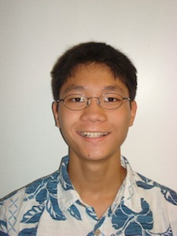

NOTE: This page is out of date, and was last updated in 2010. To see the latest version of Aaron Nagao's resume, click here.

I am a Stanford sophomore looking to attain a summer internship in computer science,
offering responsibility and opportunities for learning.
- Education
-
Stanford University
Expecting B.S. in Computer Science, 2010-present
University of California, Berkeley
Pre-Collegiate Program, Summers 2008-2009
- Overall GPA: 4.0
- Coursework in
Modern Logic,
Comparative Politics, Psychology
Kamehameha High SchoolDiploma with Academic Honors, 2006-2010
- Overall GPA: 4.3, Class Rank: 2/432
- Coursework in AP Computer Science (Java), AP Calculus, AP Physics (Calculus-based)
- Professional Experience
-
Cisco SystemsSoftware Engineering Intern, June-Sept. 2011
- Researched and developed a proof-of-concept that monitored service- and system-level statistics from
Cisco Quad,
an enterprise collaboration platform hosted across multiple virtual machines
Nan Inc.IT Intern, May-July 2010
- Programmed user-friendly Excel/Visual Basic macros for project cost-estimators
- Implemented computer/network systems, adapting to both in-office and job-site setups
Kamehameha High SchoolMath/Science Tutor, Mar. 2008-May 2010
- Tutored underperforming high school classmates regularly after school in Algebra II and Physics
Thomas Jefferson UniversityLab Intern, Dept. of Cancer Biology, May-Aug. 2007
- Researched murine blood-brain-barrier permeability via tissue sampling, RNA isolation, cDNA synthesis
- Presented results to faculty by authoring research paper, poster
- Extracurricular Activities
-
Stanford Summer Engineering AcademyAug. 2010
- Developed a basic web application project involving HTML, CSS, and Javascript back-end
- Voluntarily tutored fellow Stanford freshmen who were new to Java programming
- Coordinated email blasts and maintained login profiles to track service hours for 100 members
High School Math Team Treasurer, National/State Competitor, 2005-2010
- Organized bi-annual fundraisers for a team of 25 students to travel to a national math convention
- Awards and Special Recognition
-
- Notable Skills
- Foreign Languages: Spanish (2 years)
- Technology: Proficient in C++, C, Java; Experienced in Linux, Windows, Mac environments
- Hobbies: Tennis,
Running